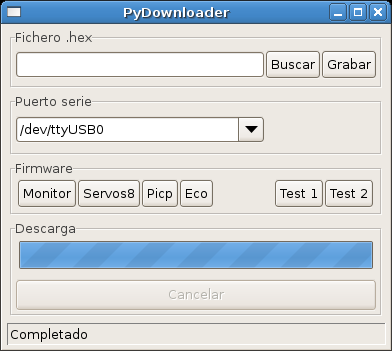
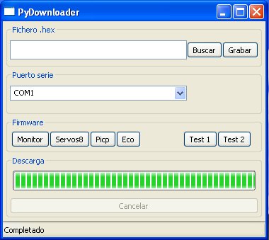

{kind=link}
Contenido
[ocultar]Introducción
Pydownloader-wx es uno los "sabores" del programa Pydownloader. Permite la descarga de programas en la tarjeta Skypic usándose como interfaz una ventana creada con las librerias gráficas wxPython.
Esta herramienta está basada en la LibIris
Características
- Lenguaje de programación: Python
- Sistema operativo: Mutiplataforma: Linux/Windows
- Interfaz usuario: wxPython
- Licencia: GPL
Autores
Agradecimientos
Muchas gracias por las pruebas realizadas en Plataformas Windows a:
Muchas gracias por las pruebas realizadas en Ubuntu a Javier Valiente Estébanez.
Muchas gracias a David, el autor de este estupendo artículo sobre cómo empaquetar un script python para Debian. En su blog sólo figura el nombre de David, no sé sus apellidos :-(
Pantallazos
| Linux | Windows |
|---|---|
|  |
 |
{kind=link}
{kind=link}
Utilización
- Alimentar la Skypic y conectarla al puerto serie del ordenador o al USB a través de un conversor USB-serie
- Ejecutar el pydownloader-wx
- Seleccionar el puerto serie donde esté conectada la
Skypic
- Linux: Los puertos serie son /dev/ttyS0, /dev/ttyS1... y si se está empleando un conversor usb-serie serán: /dev/ttyUSB0, /dev/ttyUSB1...
- Windows: Son COM1, COM2, ...
Las acciones que se pueden realizar son:
- Grabación de un fichero .hex:
- Seleccionar el fichero pinchando en "Buscar" y luego en "Grabar"
- Se puede grabar cualquier fichero .hex "arrastrándolo" con el ratón hacia el Pydownloader
- Realizar pruebas para comprobar la
Skypic
- Botón "test1": Descarga un programa que hace parpear el led
- Botón "test2": Como test1 pero el led parpadea con mayor frecuencia
- Descargar programas específicos:
- Botón "Monitor": Cargar el servidor genérico. Es el que se utiliza para hacer pruebas con el robot Skybot
- Botón "Servos8": Cargar el Servos8 que permite mover hasta 8 servos del tipo Futaba 3003.
- Botón "Picp": Cargar el Stargate:PICP para convertir la Skypic en una tarjeta grabadora (permite grabar "a bajo nivel", por ejemplo para grabar el bootloader en otra Skypic
- Botón "Eco": Cargar el Servidor de Eco que reenvía todos los caracteres recibidos a través del puerto serie.
Vídeo de demostración

|
| Demo 1: Demostración del pydownloader en acción. |
Instalación en Linux
Ubuntu 10.04
- Instalar la librería libiris: python-libiris_1.2-5_i386-ubuntu-10.04.deb
- Instalar el pydownloader: pydownloader-wx_1.0-2_i386-ubuntu-10.04.deb
Ubuntu 9.04
- Instalar la librería libiris: python-libiris_1.2-5_i386-ubuntu-9-04.deb
- Instalar el pydownloader: pydownloader-wx_1.0-2_i386-ubuntu-9-04.deb
Debian-Etch (4.0)/ Ubuntu Feisty (7.04)
- Instalar los paquetes: (disponibles en los repositorios oficiales)
- python-serial: Librería de acceso al puerto serie
- python-wxgtk2.6: Librerías gráficas wxPython
- Instalar la librería libiris: Python-libiris_1.2-5_i386.deb
Instalación en Windows
Hay que descargar e instalar los siguientes paquetes. Utilizar las opciones que viene por defecto:
- Lenguaje Python. python-2.5.msi
- Extensiones para Windows. pywin32-210.win32-py2.5.exe
- Librería de acceso al puerto serie: pyserial-2.2.win32.exe
- Librerías gráficas wxPython: wxPython2.8-win32-unicode-2.8.6.0-py25.exe
- Librería Libiris: libIris-1.2.win32.exe
- Por último, el Pydownloader: pydownloader-wx-1.0.win32.exe
Si se han utilizado las opciones que vienen por defecto en los instaladores, el pydownloader se encuentra en el directorio: C:\python25\Scripts. El ejecutable es pydownloader-wx.
Si se quiere tener acceso al Python desde la consola hay que añadir al PATH (Mi PC. propiedades, Propiedades avanzadas) del sistema lo siguiente:
- c:\python25;c:\python25\scripts ("hay que añadir sin modificar el resto del PATH")
Descargas
Versión: 1.0
| Fichero | Descripción |
|---|---|
| Pydownloader-wx-1.0.zip | Fuentes |
| pydownloader-wx_1.0-2_i386-ubuntu-10.04.deb | Paquete para Ubuntu 10.04 |
| Pydownloader-wx_1.0-1_i386.deb | Paquete para Debian/Etch |
| pydownloader-wx_1.0-2_i386-ubuntu-9-04.deb | Paquete para Ubuntu 9.04 |
| Pydownloader-wx_1.0-1_i386-ubuntu.deb | Paquete para Ubuntu 7.04 |
| pydownloader-wx-1.0.win32.exe | Autoinstalable para Windows XP |
Cambios
- 13/Jun/2010: Publicados paquetes para ubuntu 9.10
- 16/Oct/2009: Instrucciones de instalacion para Ubuntu 9.04
- 17/Sep/2009: Publicado paquete para Ubuntu 9.04
- 25/Jun/2008: Ampliadas las instrucciones de instalación en Windows
- 16/Oct/2007: Añadida Lista de cosas por hacer
- 24/Sep/2007: Versión 1.0 Liberada
- 22/sep/2007: Versión 1.0 RC1
- 21/Sep/2007: Version inicial de esta pagina
Acceso al repositorio
- SVN del proyecto http://svn.iearobotics.com/pydownloader/
La version 1.0 se puede obtener asi:
svn co http://svn.iearobotics.com/pydownloader/pydownloader-wx/pydownloader-wx-1.0